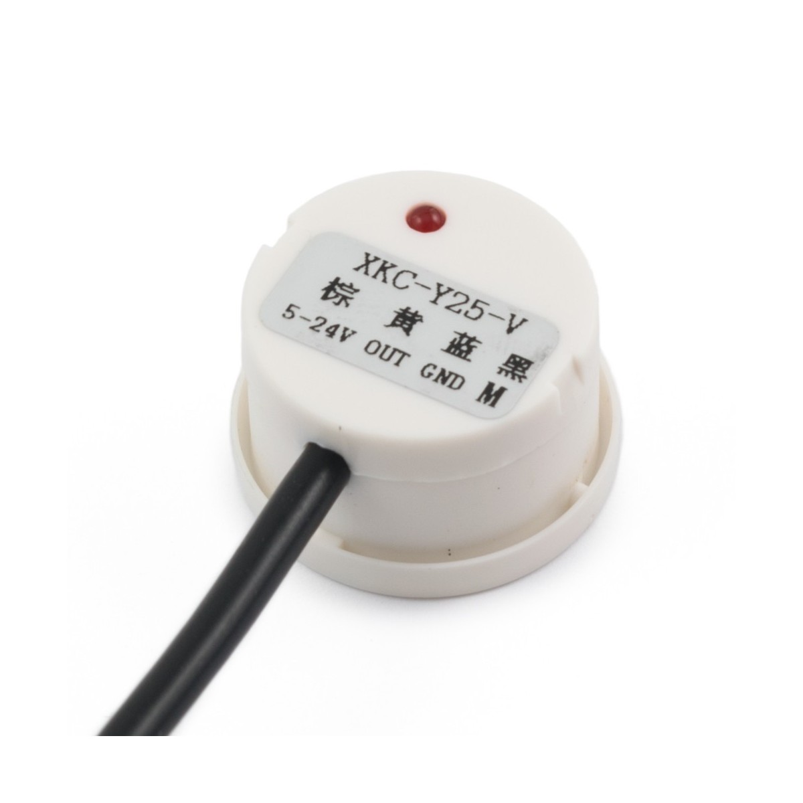

En el baño, podemos destacar elementos como el inodoro, el cual gracias a sus sensores de apertura, se puede conocer si se ha dejado la tapa abierta o cerrada.
Por otra parte, incluimos una váscula de peso, un elemento interesante para ayudarnos a controlar nuestra salud o los sensores en el espejo de detección de presencia, con los cuales harán que se enciendan automáticamente las luces.
